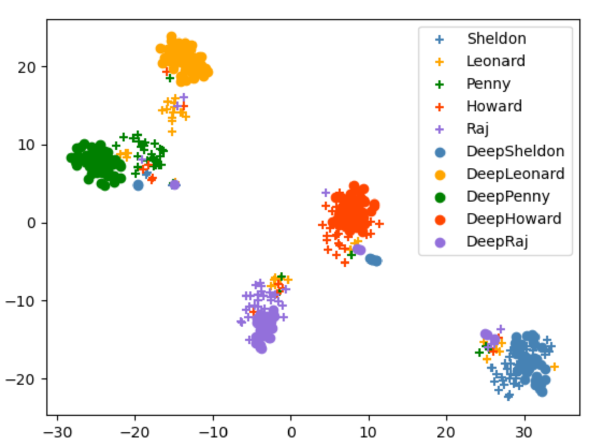
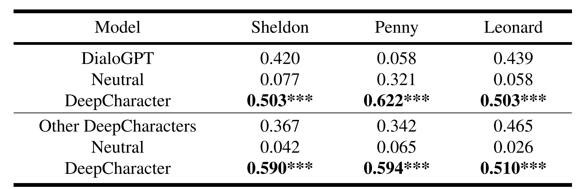

Characterization of Textual Responses
As a vivid il-lustration, we present 2 samples of different characters re-sponse to same textual inputs. Character’s per-sonality can be somehow reflected in these different re-sponses: Sheldon is a high IQ scientist who uses scien-tific terms like ’vortex of entropy’ or ’reaction time’ fromtime to time; Penny, on the other hand, is a woman withrich affection, preferring interjection like ’Yeah’,’Oh god’or ’Sweetie’; Leonard, although also being somewhat book-ish, is more like a normal and helpful person who questionsstrange utterances and tend to give favorable replies. Andas proved by characterization clustering, character classi-fication and human evaluation, our DeepCharacter modelscan generate well-characterized textual responses.
Following a previous work [38] on character classifica-tion, we use SAGE[9] model to derive weights for words ut-tered by the characters. SAGE enforces a sparse prior on itsparameters, and may be sensitive to infrequent terms in thetext. To alleviate this issue, given one character, we exper-imentally group 100 randomly selected responses from thischaracter, forming a virtual document[39], and reweight thewords inside the document utilizing SAGE. Then we usea pretrained basic BERT model to encode the reweightedvirtual documents into 128-dimensional embeddings as thefinal representation of one sample of the given character’sresponse. We perform t-SNE[37] on these sampled repre-sentations from all the 5 charaters and 5 DeepCharacters.Note that during the above process, BERT are fixed.
As shown in result, the responses from 5 charac-ters can be well separately clustered, showing the charac-ter’s diversity in terms of speaking style and word prefer-ence. Intriguingly, the clusters of responses DeepCharactersaligns quite well with the ones of the corresponding charac-ters, respectively. This verifies that the created DeepChar-acters can generate highly personalized textual responses, well capturing the speaking style and word preference.

To provide quantative results, we also build a characterclassifier based on BERT to automatically evaluate the char-acterization of text responses generated by our DeepChar-acters. The character classifier is trained on 18,000 doc-uments from original corpus. This character clas-sifier achieves 98.3% validation accuracy on origin corpus(900 documents) while getting 86.4% testing accuracy ongenerated responses (2,000 documents), showing that ourDeepCharacters can well capture the characteristics.
For human evaluation, we randomly select 50 responsesamples from DeepSheldon, DeepPenny and DeepLeonardrespectively, and each is paired with general response gen-erated by DialoGPT as a non-personalized baseline, and re-sponse generated by other character model as an untargetedcharacter comparison. Each question is presented to at least3 judges.
The judges are asked to rank each response pair for howwell the response matches the given material in speakingstyle, decision-making style and emotion tendency, using a3-point Likert-like scale following [51]. As shown in result, all three targeted DeepCharacters gain more pref-erences over non-personalized DialoGPT and untargetedDeepCharacters, which shows our DeepCharacter’s abilityof capturing a specific character’s personality and speakingstyle.

Characterization of Multimodal Responses
As char-acterization in multi-modality is comparatively subjective,we rely on user study to evaluate our DeepCharacter’s ca-pacity in generalizing personalized multimodal responses.
We use DialoGPT finetuned on whole DPCD corpus insteadof any specific character, and un-finetuned TTS model asthe neutral baseline, while the inference of acoustic-visualsynchronization model remains the same as DeepCharacter.The neutral baseline has learned the TV show corpus’s spe-cial text distribution and can generate high quality speeches.
We randomly select 10 video clips generated byDeepSheldon, DeepLeonard and DeepPenny, respectively.Like PC-AVS[54], the total 30 video clips, paired withbaseline results, are handed to all 30 judges. The judgesare asked to rank each multimodal response pair base onhow well the response matches the target character in termsof speaking style, tone and identity, considering all threemodalities comprehensively. As shown in result, allthree targeted DeepCharacters gain more preferences overthe neutral baseline, which shows our DeepCharacter’s abil-ity of generating characterized multimodal responses.

The above results demonstrate the collected DPCD cansupport our simple baseline to generate deep personalizedcharacters